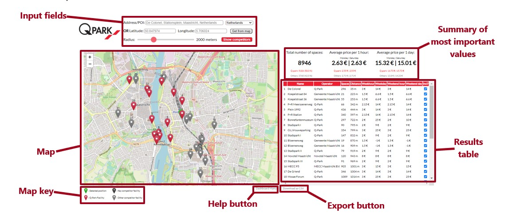
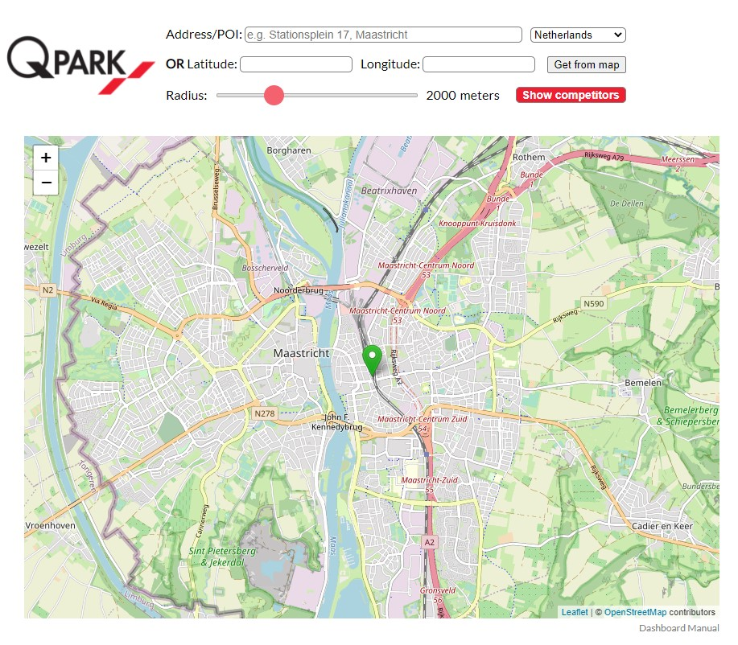
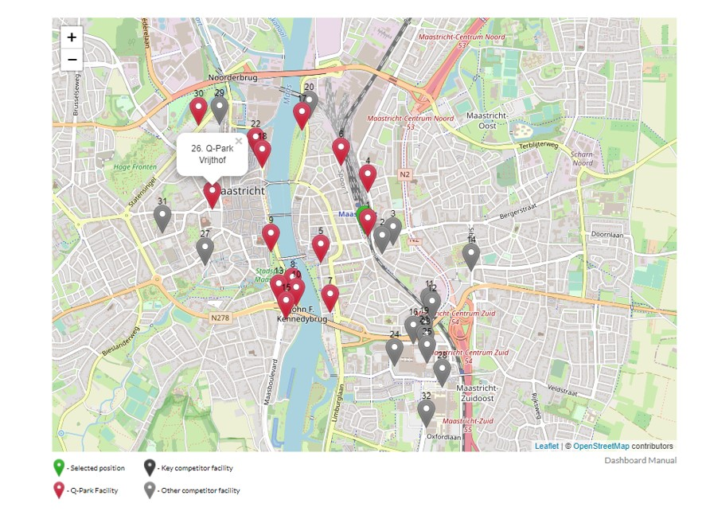
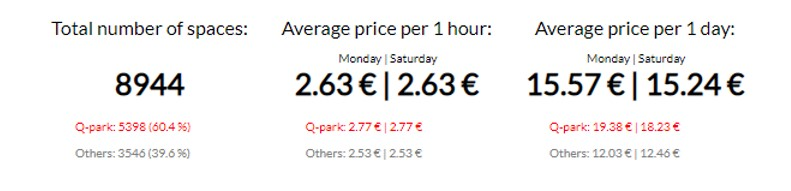
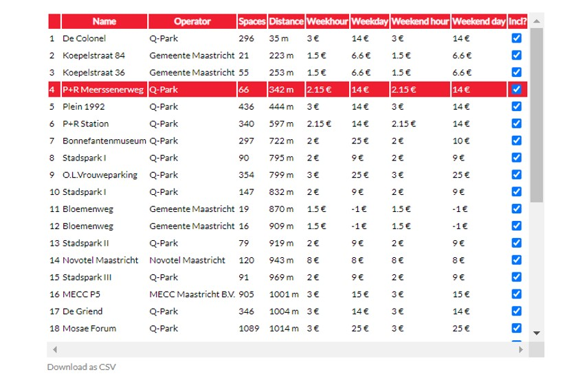
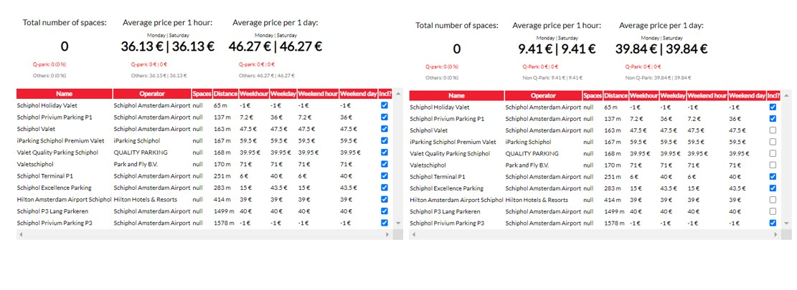

Back to main page
The Competitors Dashboard has been developed to provide an insight into off-street parking facilities located in a certain radius from any input location, whether there exists a Q-Park facility in this location or not. The dashboard is meant to ease the process of acquisition and to improve decision-making in the field of business development and investment. The dashboard has been developed as a web application using HTML and JavaScript for front-end and Python for back-end and processing. The tool fetches data from Parkopedia API and presents them in a form of a dashboard.

1. INPUT SCREEN - the location can be selected either by entering the address or geographic coordinates, or by dragging the marker on the map.
2. RESULTS MAP - contains interactive markers with pop-up boxes.
3. VARIABLES SUMMARY
4. RESULTS TABLE
5. FILTERING - a functionality allowing to filer which facilities are included in variables summary using the checkboxes in the table.
